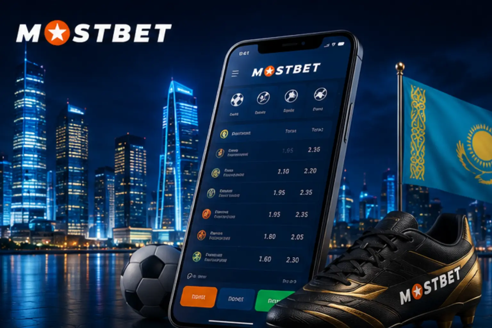

Mostbet в Казахстане: что представляет собой платформа?

Mostbet — международная платформа для ставок на спорт и онлайн-казино, основанная в 2009 году. Сегодня она работает более чем в 93 странах и объединяет свыше 25 миллионов зарегистрированных игроков, уверенно входя в число крупнейших букмекеров мира.
Казахстан является важным рынком для платформы: пользователи могут вносить депозиты в тенге, ставить в национальной валюте и получать поддержку на родном языке. В каталоге — более 30 спортивных направлений: футбол, бокс, казахская борьба, теннис, баскетбол, киберспорт и многое другое.
Наряду со спортом Mostbet предлагает полноценное казино: слоты, живые дилеры, настольные игры, виртуальный спорт. Матчи Казахстанской Премьер-лиги и национальной сборной освещаются на платформе в расширенном формате.
Футбол, бокс, казахская борьба, теннис, баскетбол, киберспорт и многое другое
Слоты, рулетка, покер, баккара, живые дилеры — всё в одном месте
Kaspi, Halyk, BCC Pay — пополнение, вывод и ставки в казахстанских тенге
Расширенные коэффициенты на матчи КПЛ и сборной Казахстана с прямыми трансляциями
Вход в Mostbet: подробная пошаговая инструкция

Процедура авторизации в Mostbet занимает не более 30 секунд и не вызывает затруднений. Заходить в аккаунт можно с любого устройства — компьютера, смартфона или планшета.
Авторизация через официальный сайт
- Запустите браузер и откройте официальный сайт Mostbet
- Кликните кнопку «Войти» в правом верхнем углу экрана
- Откроется форма входа — укажите телефон, email или ID
- Введите пароль, заданный при регистрации аккаунта
- Нажмите «Войти»
- После успешной проверки данных личный кабинет откроется немедленно
Авторизация через мобильный браузер
Мобильная версия сайта Mostbet полностью адаптирована под смартфоны и планшеты. Откройте браузер, перейдите на сайт, нажмите «Войти» и введите учётные данные — в мобильной версии доступен весь функционал настольной.
Варианты входа в аккаунт Mostbet
Платформа Mostbet предусматривает несколько различных способов авторизации. Выберите наиболее удобный для себя:
| Способ входа | Что нужно | Время | Преимущество |
| Номер телефона | Номер + Пароль | 10-15 сек | Простое восстановление доступа |
| Email + Пароль | 10-15 сек | Оптимально для компьютеров | |
| ID аккаунта | ID + Пароль | 10-15 сек | Резервный способ входа |
| Соцсети | Профиль в соцсети | 5-10 сек | Без пароля |
| Google / Facebook | Аккаунт Google/FB | 5-10 сек | Вход одним нажатием |
Вход по номеру телефона
Самый распространённый вариант — мобильный номер, указанный при регистрации. Введите номер с кодом страны (+7 для Казахстана), пароль и нажмите «Войти». Подтверждение номера по SMS добавляет дополнительный уровень защиты аккаунта.
Вход через социальные сети
Mostbet поддерживает быструю авторизацию через Google, Facebook, Telegram, Twitter/X и Steam. В форме входа выберите значок нужного сервиса, разрешите доступ к профилю — и вы окажетесь в личном кабинете за считанные секунды.
Как войти через мобильное приложение Mostbet

Владельцам смартфонов наиболее удобно пользоваться мобильным приложением Mostbet. Оно включает весь функционал веб-сайта и дополнено рядом эксклюзивных мобильных функций.
Преимущества приложения
- Встроенный механизм автоматического обхода блокировок
- Стремительная загрузка за счёт облегчённого и оптимизированного кода
- Мгновенные push-уведомления при изменении коэффициентов
- Сжатие данных для экономии мобильного трафика
- Автоматический вход — пароль не нужно вводить повторно
- Биометрическая аутентификация (отпечаток пальца / Face ID)
Вход в Android-приложение
Android-версия распространяется в формате APK с официального сайта Mostbet. Загрузите файл, разрешите «Установку из неизвестных источников» в настройках безопасности телефона, дождитесь завершения установки и запустите приложение. При первом открытии введите учётные данные. Активировав «Запомнить меня», вы будете входить автоматически при каждом последующем запуске.
Вход в iOS-приложение
Владельцы iPhone и iPad могут загрузить Mostbet из App Store (доступность зависит от региона) или пользоваться мобильной версией сайта в Safari. Найдите приложение в App Store, установите, запустите и войдите с теми же данными, что и на сайте. Веб-сайт, Android-приложение и iOS-приложение работают с одним и тем же аккаунтом.
Личный кабинет Mostbet: полный обзор возможностей

Сразу после авторизации открывается полный доступ ко всем инструментам платформы. Продуманный интерфейс позволяет быстро ориентироваться в разделах и легко управлять игровым счётом.
Работа с балансом
Отслеживайте текущий баланс, пополняйте счёт удобным способом, выводите выигрыши на карты или в электронные кошельки и изучайте полную историю финансовых операций.
Программа лояльности
Раздел личного кабинета отражает ваш уровень в программе лояльности Mostbet. Каждая ставка приносит Mostbet-коины, которые затем можно конвертировать в реальные деньги, фрибеты или использовать в специальных призовых розыгрышах.
Структура личного кабинета
| Раздел | Назначение | Основные функции |
| Личные данные | Управление профилем | Изменить email, телефон, реквизиты документов |
| Баланс | Финансовые операции | Пополнения, выводы, история транзакций |
| История ставок | Аналитика | Активные и закрытые ставки |
| Бонусы | Акции и промокоды | Активировать бонусы, отслеживать выполнение |
| Верификация | Подтверждение личности | Загрузка документов, статус проверки |
| Настройки | Персонализация | Язык, валюта, уведомления, безопасность |
Не удаётся войти в Mostbet: разбираем ситуации
Иногда пользователи сталкиваются с затруднениями при входе. Ниже — наиболее распространённые ситуации и способы их решения.
Забыли пароль?
Это самая частая причина проблем со входом, но и решается она проще всего. На странице входа нажмите «Забыли пароль?», выберите способ восстановления — телефон, email или ID аккаунта — и заполните форму. Новый пароль придёт по SMS или на электронную почту. После входа сразу смените временный пароль на надёжный в разделе настроек безопасности.
Сайт не открывается
Если официальный сайт Mostbet недоступен, воспользуйтесь одним из вариантов:
- Актуальное зеркало: ссылки публикуются в Telegram-канале @mostbet, их также можно получить у службы поддержки или на официальных партнёрских ресурсах
- VPN: установите проверенное VPN-приложение, подключитесь к зарубежному серверу и откройте сайт через него
- Мобильное приложение: в нём реализован встроенный обход блокировок без каких-либо дополнительных настроек
Аккаунт заблокирован
Ограничение доступа к аккаунту случается редко, однако имеет место. Возможные причины: нарушение условий пользования, подозрение в создании нескольких аккаунтов, необходимость прохождения верификации или техническая ошибка. Свяжитесь со службой поддержки Mostbet — через лайв-чат, на email support@mostbet.com, а также через WhatsApp, Viber или Telegram. Операторы работают в круглосуточном режиме.
Защита аккаунта Mostbet: практические советы
Надёжная защита аккаунта — залог безопасной работы с любой онлайн-платформой. Несколько несложных мер уберегут средства и персональные данные от посторонних.
Рекомендации по безопасности
- Создайте пароль длиной от 8 символов
- Используйте заглавные и строчные буквы, цифры и спецсимволы
- Избегайте простых комбинаций — дат рождения, имён, «qwerty» и т.п.
- Не применяйте один и тот же пароль на нескольких ресурсах
- Подключите двухфакторную аутентификацию в настройках безопасности
- Обновляйте пароль раз в 2-3 месяца
- При входе с чужого устройства обязательно выходите из аккаунта после завершения сессии
Признаки фишингового сайта
Злоумышленники регулярно создают поддельные сайты Mostbet для кражи учётных данных. Насторожиться стоит, если: в адресной строке нет значка замка (HTTPS), URL нестандартный, в тексте есть опечатки и грамматические ошибки, при входе запрашиваются избыточные сведения, дизайн отличается от оригинала. Перед вводом логина и пароля всегда проверяйте адрес сайта. Переходите только по ссылкам из проверенных официальных источников Mostbet.
Служба поддержки при сложностях со входом
Если справиться с проблемой самостоятельно не получается, специалисты Mostbet готовы помочь — семь дней в неделю, двадцать четыре часа в сутки.
Каналы связи с поддержкой
Расположен в правом нижнем углу страницы. Среднее время ответа — 1-3 минуты. Наиболее оперативный способ получить помощь.
support@mostbet.com — для развёрнутых обращений. Ответ, как правило, поступает в течение нескольких часов.
Поддержка через WhatsApp, Viber и Telegram. Операторы отвечают на русском языке в полном объёме.
Что подготовить перед обращением
- Телефон или email, указанные при регистрации
- Числовой ID игрового аккаунта (если он известен)
- Краткое описание возникшей ситуации
- Скриншоты сообщений об ошибках (при наличии)
Сотрудники поддержки общаются на русском языке и помогут восстановить пароль, снять блокировку аккаунта или устранить техническую неполадку.
Вопросы и ответы
Нет. Ставки, запуск казино-игр и управление средствами требуют наличия личного кабинета. Регистрация бесплатна и занимает пару минут.
Mostbet работает по действующей международной игровой лицензии. Перед использованием платформы изучите актуальные правила, действующие в Казахстане.
Нет. Приложение работает с теми же данными, что и сайт. Иметь несколько аккаунтов запрещено правилами платформы и влечёт блокировку всех из них.
На личном устройстве это удобно. На чужом или общедоступном компьютере сохранять данные не стоит — по завершении работы обязательно выходите из аккаунта.
Принимаются платежи через Kaspi Pay, Halyk Bank, BCC Pay, Visa, Mastercard, банковские переводы, Bitcoin, USDT, Ethereum, Skrill, Neteller и прочие электронные кошельки. Все расчёты ведутся в казахстанских тенге.
Правилами Mostbet каждому пользователю разрешён ровно один аккаунт. При обнаружении нескольких профилей все они блокируются без исключения.